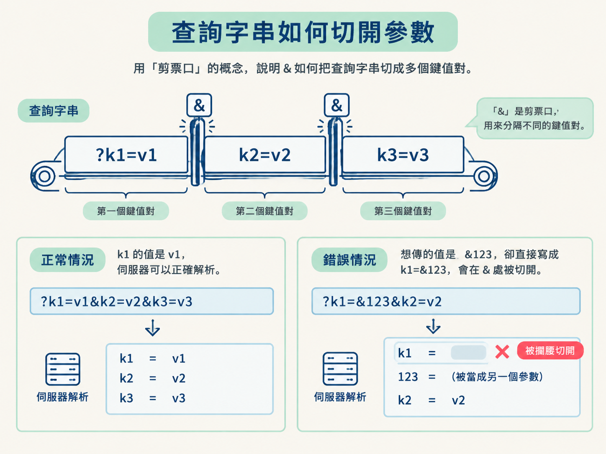
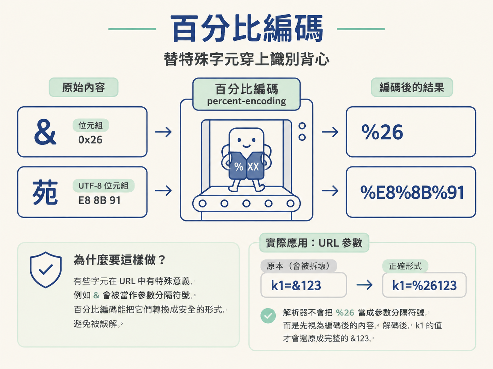
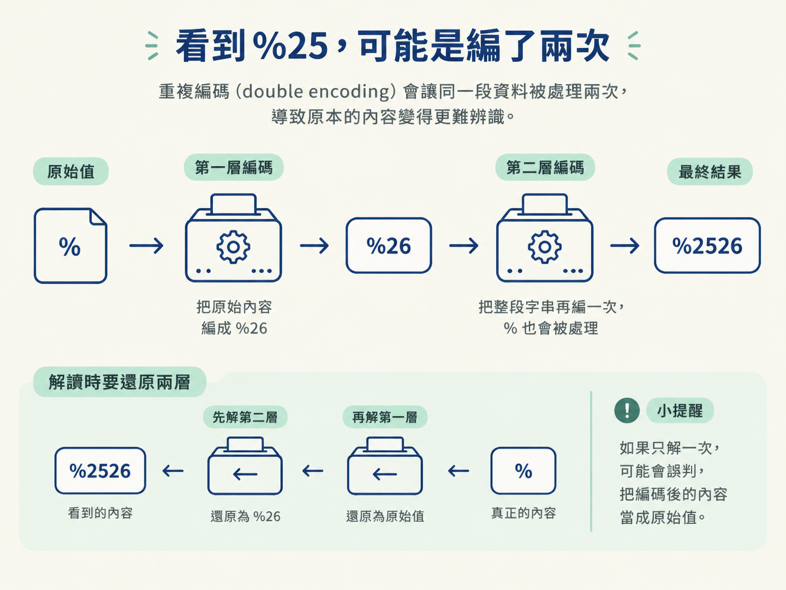

& 會拆壞查詢參數你正在重現搜尋頁的請求。從 DevTools 的 Network 面板找到目標封包後，把網址交給 requests，卻拿到完全不同的資料。仔細比對才發現，參數值原本是 &apple123，送出後卻像被攔腰切開。
原因不是伺服器看不懂這個值，而是 & 在查詢字串裡另有任務：它負責分隔參數。這就像把逗號同時拿來當標點和姓名的一部分；如果不先做記號，解析器根本不知道它是哪一種用途。
URL 編碼就是那個記號。它讓保留字、空格與中文可以安全待在參數值裡，不會被誤認成 URL 語法。這個觀念會一路連到後面的抓取與逆向：一般請求多半由套件自動處理，但碰到 JavaScript 簽名時，編碼結果可能直接決定簽名能不能對上。
你會學會辨認查詢字串裡的 %XX，並使用 Python 的 quote()、unquote() 與 urlencode()，還原或重建 URL 參數。更重要的是，你要能判斷何時該自己編碼，何時應該交給 requests。
一段典型的查詢字串長這樣：?k1=v1&k2=v2&k3=v3。
問號表示查詢字串從這裡開始，& 用來分隔不同的鍵值對，= 則把鍵和值分開。這套規則讓機器可以精準解析 URL，卻也帶來一條邊界：當 &、=、?、# 或空格出現在鍵和值裡時，不能直接把它們原樣塞進去。
回到剛才的案例。如果直接送出 k1=&123，解析器看到 &，就會以為 k1 的值已經結束，後面的 123 是另一段內容。你心裡想的是一個完整的值，伺服器看到的卻是被切開的查詢字串。

中文也有類似問題。以「苑」為例，它不在 URL 可直接使用的字元範圍內。URL 傳遞的是位元組，因此非 ASCII 字元要先轉成 UTF-8 位元組，再以適合放進 URL 的形式表示。
URL 編碼也稱為百分比編碼（percent-encoding）。它會把不能直接放進 URL 的內容，換成 % 加上位元組的十六進位值。
例如，& 的位元組是 0x26，所以編碼後是 %26。「苑」轉成 UTF-8 後的位元組是 E8 8B 91，因此會表示成 %E8%8B%91。十六進位字母通常使用大寫。
原本會被拆壞的 k1=&123，正確形式是 k1=%26123。解析器不會把 %26 當成參數分隔符號，而是先把它視為編碼後的內容。解碼之後，k1 的值才會還原成完整的 &123。

在 DevTools 裡觀察請求時，可以同時比對網址中的查詢字串與解析後的參數。看到 %26 或 %E8%8B%91，不要急著把它當成加密或亂碼；它通常只是特殊字元換了一件適合在 URL 裡通行的外套。
Python 標準函式庫的 urllib.parse 提供三個常用工具。quote() 負責編碼單一值，unquote() 用來還原內容，urlencode() 則會處理整組鍵值對，組成 k=v&k2=v2 形式的查詢字串。
下面的資料同時包含保留字與中文。先用 urlencode() 處理整個字典，看看它如何產生可安全放進 URL 的結果：
import urllib.parse
data = {
"k1": "&123",
"k2": "苑"
}
new_data = urllib.parse.urlencode(data)
print("new_data:", new_data)執行後會印出：
new_data: k1=%26123&k2=%E8%8B%91&123 被編碼成 %26123，「苑」則變成 %E8%8B%91。如果你在 DevTools 的封包裡看到 %E8%8B%91，可以用 urllib.parse.unquote() 還原成「苑」；反過來，quote("苑") 會得到 %E8%8B%91。
| 情境 | 建議做法 | 原因 |
|---|---|---|
使用 requests 傳送一般查詢參數 |
把原始值放進 params={...} |
套件會自動處理編碼，通常不必先手動加工。 |
| 需要重現 JavaScript 產生的簽名字串 | 按照 JavaScript 的方式自行編碼 | 編碼後的字串若不同，後續雜湊得到的簽名也會不同。 |
正在分析封包中的 %XX |
先解碼，再判斷原始內容 | 這類字串可能只是百分比編碼，不代表它經過加密。 |
最常見的情況是：使用 requests 時，不需要自己先編碼。只要把參數放進 params={...}，套件就會替你處理。若你先手動編過一次，再把結果交給套件，反而可能產生第二次編碼。
真正需要親手處理的時機，通常是要和 JavaScript 產生的字串完全對齊。例如網站先用 encodeURIComponent 編碼參數，再把結果拼接起來做雜湊。Python 端若跳過編碼，或使用不同的編碼結果，送進雜湊函式的原文就不同，簽名自然對不上。
%25，可能是編了兩次分析封包時，另一個常見陷阱是重複編碼（double encoding）。第一次編碼會產生像 %26 這樣的內容；如果整段字串又被編碼一次，其中的 % 也會被處理，而 % 的編碼結果就是 %25。
因此，看到 %25 時，可以留意這段資料是否曾在 JavaScript 裡先處理一次，放進 URL 時又被瀏覽器處理一次。解讀這類參數時可能需要還原兩層，不能只解一次就認定那是原始值。

查詢字串依靠
&、=與?等保留字來組織參數。當這些符號、空格或中文要成為參數內容時，就要透過百分比編碼，避免內容被誤認成語法。
%26代表&，%E8%8B%91代表「苑」。在 Python 中，quote()與unquote()適合處理單一值，urlencode()適合處理整組鍵值對；一般請求交給requests自動編碼即可，只有需要對齊 JavaScript 的簽名輸入時，才需要特別控制編碼結果。
在「抓取 → 反爬 → 逆向」這條路上，URL 編碼是很前面的基礎層：它先確保請求參數能被正確傳送，之後才有必要討論簽名、雜湊或其他反爬機制。
URL 編碼處理的通常是特殊字元與位元組表示。如果你遇到的不是幾個 %XX，而是一整段由英數字元組成的內容，那可能是另一種編碼：Base64。下一節會接著看它如何把任意位元組轉成適合傳遞的文字。